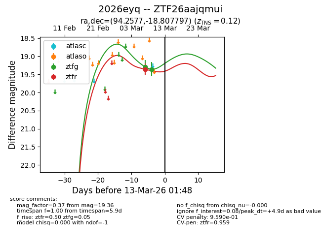
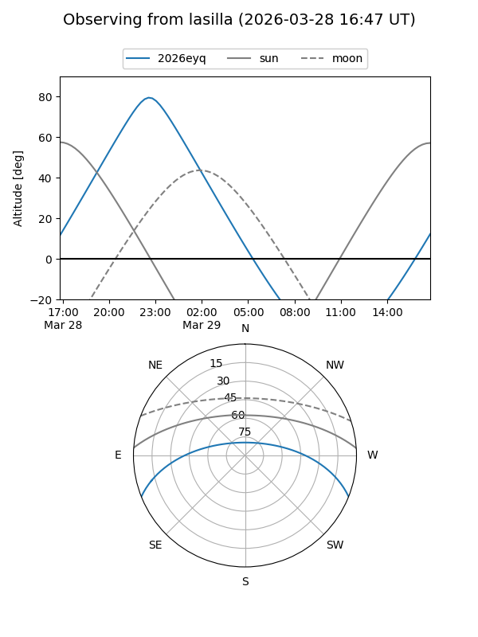
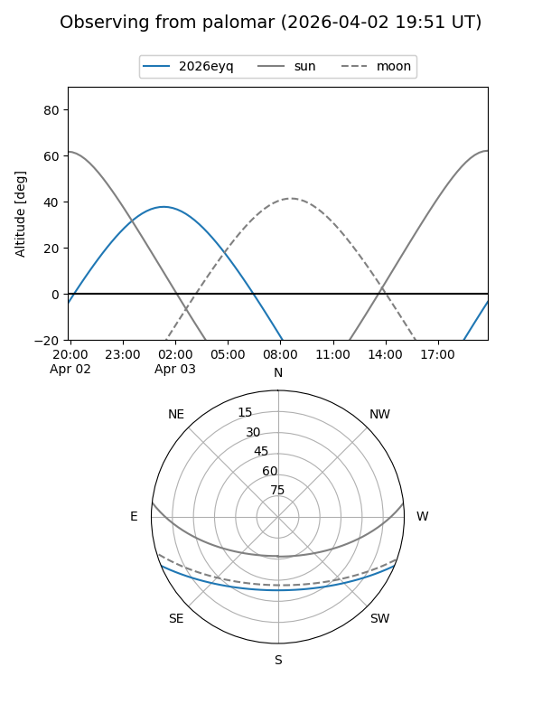
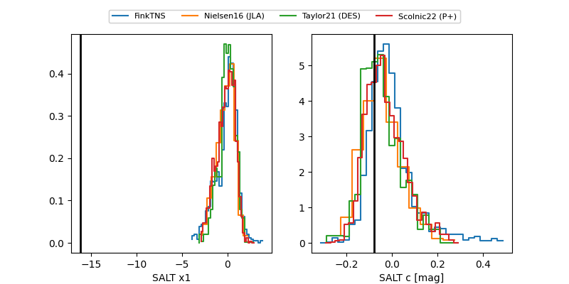

2026eyq
Target 2026eyq at 2026-03-13 01:49
Aliases and brokers:
FINK: link
Lasair: link
ALeRCE: link
TNS: link
YSE: link
alt names
ZTF26aajqmui (ztf,fink_ztf)
2026eyq (tns,yse)
Coordinates:
equatorial (ra, dec) = 94.2577,-18.80780
equatorial (HMS+DMS) = 06:17:01.84,-18:48:28.07
galactic (l, b) = (226.2967,-15.84355)
Flags:
confirmed ia
likely cv
Photometry:
last ztfg=19.36, ztfr=19.36
2 ztfg, 1 ztfr detections
Lightcurve

Visibility


Additional plots
